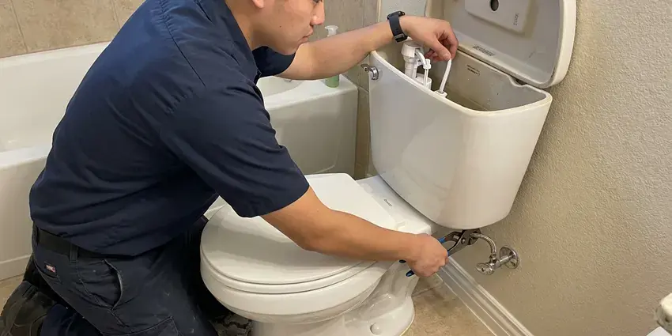
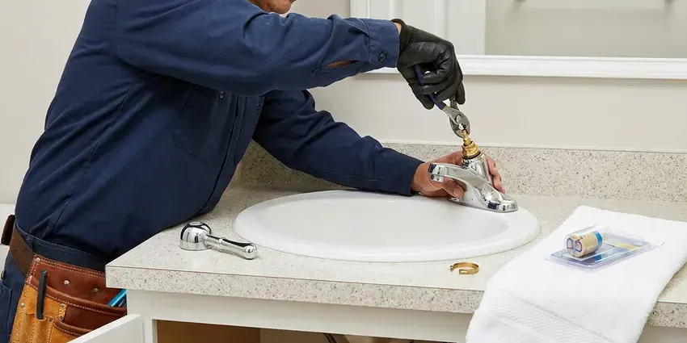

Shower Repair in Kaneohe, HI
A shower that fights you every morning is fixable. HKL Plumbing repairs valves and diverters in Kaneohe, HI without opening the wall in most cases.
- Same-Day Shower Repair
- Anti-Scald Stops Set
- Diverter and Spout Repair
- Cartridges Stocked on Trucks

Get Your Shower Working Right in Kaneohe, HI
Most shower repairs finish in a single visit.
Shower Repair for Valves, Heads and Drains in Kaneohe, HI
HKL Plumbing knows a broken shower throws off the whole morning. Our plumbers identify the valve from the trim and bring the matching cartridge, so most repairs wrap up in one trip. Odd valves sometimes take a day for parts.
Our expertise includes:
- Shower Drain Clog Clearing
- Shower Drain Augering and Repair
- Showerhead, Arm and Diverter Leak Repair

Additional Bathroom Plumbing Services in Kaneohe, HI
From toilets to showers, our bathroom plumbing team in Kaneohe, HI repairs, installs, and replaces every fixture with clean, code-compliant work.


Toilet Repair service for Kaneohe homeowners



Kaneohe faucet repair specialists


Customers
Why Choose HKL Plumbing for Shower Repair in Kaneohe, HI?
Scale and pressure are behind most shower trouble we see. Minerals scratch cartridge surfaces and stiffen O-rings, and water pressure above about 80 psi speeds both along, so we check your pressure on every call. High readings get flagged.
- Local Experience, We see the same valves in Hawaii homes every week.
- Scald Protection, We set the limit stop so hot water stays at a safe level.
- Flat Pricing, You get a flat price before any repair starts.
Citywide Coverage
No part of Kaneohe is too far for us. Trucks are routed by neighborhood, which keeps drive time short and windows tight. You get a two-hour window.
Experienced Team
Moen, Delta, Kohler, Pfister and Symmons valves all come through our hands. They often know the brand and series from the trim, so the right part is ready before the handle is off. That saves time.
Safety-First Approach
Scald protection gets checked on every repair. We set the anti-scald limit stop so the hottest setting stays at a safe temperature, usually around 120 degrees, and we test it with a thermometer at the head. Kids and older adults benefit most.
Trusted Certified Kaneohe Plumbing Services Professionals
At HKL Plumbing, we are proud to offer certified plumbing services throughout Kaneohe, HI. Those papers on the wall mean something. Our plumbers hold recognized industry credentials, and they follow strict safety and quality rules on every repair, installation and maintenance call we run.
Call Us Now PHCC Plumbing Contractor Recognition
PHCC Plumbing Contractor Recognition Better Business Bureau (BBB) Accreditation
Better Business Bureau (BBB) Accreditation Angi Certified Pro
Angi Certified Pro ISO 9001 Quality Management Certification
ISO 9001 Quality Management CertificationValve and Drain Repair in Kaneohe, HI
Shower Valve Replacement in Kaneohe
Temperature that swings or a handle that fights you points to the valve. If the valve body is pitted or parts no longer exist, we swap the valve, often through an access opening from the closet side. The new valve will have scald protection. Thermostatic valves are an option if you want exact temperature control.

Hot Water Pressure Problems in Kaneohe, HI
Weak hot water with strong cold usually rules out the showerhead. The problem is on the hot side, either sediment in the water heater outlet, a partly closed valve at the heater or a cartridge whose hot port is packed with scale. Each side gets tested. Good hot flow at the sinks points us straight at the shower cartridge.
Shower Drain Body Repair in Kaneohe
Drain bodies can crack or work loose under the pan. A loose or cracked drain lets water go under the pan, which shows up as a soft floor beside the shower or a ceiling stain. The drain gets cleared and tested. Loose drains get resealed, and cracked ones get replaced.
Weak Shower Spray Repair in Kaneohe, HI
Most weak showers come down to the head. Scale packs the nozzles and the restrictor screen behind them, and the spray drops off a little at a time until one day it feels like a garden mister. A soak can bring it back. If the cartridge is clogged too, we replace it and test the flow again.
Leaking Shower Cartridge Repair in Kaneohe
Cartridges wear from the inside. Grit and scale scratch the sealing surfaces, the O-rings flatten and harden, and eventually the valve cannot fully stop the water when the handle is closed. A new cartridge fixes it. We use genuine parts and coat the new one with silicone grease so the handle turns smoothly.
Leaky Shower Valve Repair in Kaneohe
One drip every few seconds adds up to hundreds of gallons a year. In a single-handle shower the cause is almost always the cartridge or its O-rings, and on an old two-handle valve it is the stem washer and the seat. The parts are on the truck. Moen, Delta, Kohler and Pfister cartridges cover most of the valves we open, so the repair is usually done that same visit.
Low Shower Pressure Repair in Kaneohe, HI
Low pressure at the shower with good pressure at the sink narrows it down fast. That points to the head, the flow restrictor or the cartridge, not the main or the water heater, and it is usually something we can fix within an hour. We start with the head. If every fixture is weak, we check the regulator and the main.

Tub and Shower Combo Repair in Kaneohe, HI
Tub and shower combos share one valve, one drain and a diverter between them. That means a worn diverter steals pressure from the head, a clogged tub drain slows the shower and a leaky valve shows up at both the spout and the head. Each part gets tested. The overflow gasket gets a look too, since it is a common hidden leak.
Shower Repair Near Me in Kaneohe, HI
Plenty of plumbers near Kaneohe will replace a cartridge. Not all of them reset the limit stop, test the balance with a flush and check the wall for old leaks. Our plumbers do.
On the day of the repair, a drop cloth goes in the tub and a towel over the drain so nothing small disappears. The price is set after we see the valve, and our guarantee covers the repair. The tub is wiped down when we finish.
HKL Plumbing at a Glance
- Fully licensed plumbing team covering Kaneohe, HI
- Same-day appointments and 24/7 emergency response
- Upfront, flat-rate pricing before work begins
- 4.8-star rated by 529+ Hawaii customers
Kaneohe Map
Kaneohe Information
- Population
- 37,430
- Area codes
- Local
- Service area
- Kaneohe and communities within 40 miles
- Nearby
- Kailua, Urban Honolulu, Halawa, Aiea
Most municipal water in Hawaii comes from volcanic groundwater aquifers and is usually soft to moderately hard, so heavy scale is less of a problem than in many places. A shower repair in Kaneohe, HI fixes the drip and checks the scald limit in one visit.
Expert Services
Call HKL Plumbing for honest, reliable plumbing from people who know the trade in Kaneohe, HI.
Our Specialized Plumbing Services in Kaneohe, HI
At HKL Plumbing, we handle the full list of plumbing services across Kaneohe, HI. From leak detection to full system installs, our team works fast and charges fair prices on homes and commercial properties alike. Here are the core services we offer:


Our Shower Repair Steps in Kaneohe, HI
We diagnose, fix and test, and we clean up before we leave.
Call and Describe
Call (808) 649-6718 and describe the drip, low pressure or temperature swing. You get a two-hour window.
Diagnose the Shower
The valve, diverter and drain get inspected and test for hidden leaks. You approve a flat price first.
Repair and Test
We replace worn parts and set anti-scald limits. Pressure, temperature and leaks get checked before we go.
Frequently Asked Questions About Shower Repair in Kaneohe
Simple fixes run $100 to $250. Bigger repairs like replacing a shower valve usually fall between $300 and $800 with parts and labor, depending on how the valve is reached and whether tile has to come off. Access is the big variable. The price is set before we begin.
Unscrew the head and soak it in vinegar first. If pressure stays low, the cartridge, the flow restrictor or a pressure regulator may need service.
A drain screen catches most of the hair. Clean the showerhead every few months with a vinegar soak, skip the harsh chemical drain cleaners and fix small drips before they score the cartridge. Most municipal water in Hawaii comes from volcanic groundwater aquifers and is usually soft to moderately hard, so heavy scale is less of a problem than in many places. Softened water slows the scale.
Swapping the head, yes. Leave cartridges and tile leaks to a plumber.
It can, if the clog is past the trap. Deeper clogs can slow nearby sinks and gurgle the toilet, and severe ones can back water up through the lowest drain. Do not let it sit.
Start with the showerhead. Scale in the head is the usual cause, then a clogged cartridge or a sticking spool. Each gets checked. Low pressure at every fixture points to the regulator or the main.
Showerheads are fair game for most people. Cartridges and anything behind tile are where DIY goes wrong, since a seized cartridge can crack the valve body. That is a common call for us.
Moen, Delta, Kohler, American Standard, Pfister and Grohe are most of what we see. We also work on Symmons, Sterling and older brands, and we know which supply houses still carry parts for discontinued valves. Odd parts come next day.
What People Are Saying About Our Plumbing Experts?

Laura S.
Our 40 gallon tank started leaking from the bottom after thirteen years. The tech hauled the old one out, set a new unit with a fresh expansion tank, and had hot water running in about four hours. He took the old tank with him too.
Water Heater Replacement · Kailua, HISofia M.
Two new toilets went in during one visit. The tech set them on new wax rings and swapped the old supply lines. He also noticed our bathroom faucet dripping and replaced the cartridge while he was there. No mess left behind.
Toilet Installation · Kaneohe, HI
Carlos V.
Our house still had galvanized pipe, and upstairs the shower was a trickle. The crew repiped everything in PEX over three days and patched every drywall hole before they left. The pressure difference is night and day.
Repiping · Aiea, HI
Lisa C.
Water was pouring out from under the washing machine on a holiday weekend. HKL Plumbing talked me through closing the valves over the phone and had a plumber at the house within ninety minutes. It was a burst fill hose.
Emergency Plumbing · Halawa, HI
Karen W.
After our third pinhole leak in copper, we stopped patching. HKL Plumbing gave us a written plan room by room and repiped the house in PEX while we stayed in it. The crew covered our floors every morning and cleaned up every night.
Repiping · East Honolulu, HI
Brian W.
I smelled gas behind the dryer and called right away. The plumber found a corroded flex connector, replaced it, and pressure tested the whole line before turning the gas back on. He let me watch the gauge hold steady for fifteen minutes.
Gas Line Repair · Halawa, HI